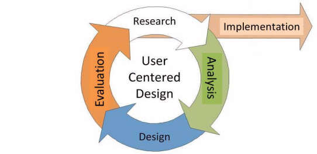

Learning Design Standard - User Research
On this page
Revision history
| Date
|
Version
|
Contact
|
Content
|
22/03/2018
|
0.3
|
Namrata Roy Chowdhury
|
First versioned draft
|
4/05/2018
|
0.4
|
Namrata Roy Chowdhury
|
First exposure draft
|
18/06/2018
|
1
|
Ross McGuire
|
Added – Intellectual property and moral rights – pg. 5
|
18/06/20108
|
1
|
Ross McGuire
|
DTA Version created
|
Using the Learning Design Standards
The Australian Public Service Commission (APSC) has developed Learning Design Standards (LDS) to describe a capability needed by the Australian Public Service (APS) to help with the digital transformation of government services.
The LDS describes the context, business need, target audience, underpinning capabilities and curriculum for these capabilities. It does not prescribe or mandate a specific learning solution or format to build the capability described. That is left open for providers and sellers to design solutions that meet the specific needs of individual agencies.
This document is for:
- Providers and sellers seeking to work with APS agencies to understand the needs of the APS when developing and marketing products.
- APS agencies seeking to build capability, to inform their learning & development planning, program development and approaches to market for learning solutions.
All queries relating to this standard should be directed to capability@apsc.gov.au.
Intellectual property and moral rights
Intellectual property in parts of these materials may be owned by the Skills Framework for the Information Age (SFIA) Foundation.
The Australian Public Service Commission (APSC) holds an extended public sector licence on behalf of all Australian Public Service (APS) agencies covered by the Public Service Act 1999 (PS Act) for the use of SFIA materials. This licence permits certain uses of SFIA materials including the creation and internal distribution of products and services derived from or using significant extracts of SFIA materials. The licence does not extend to commercial use of the materials and does not cover Commonwealth bodies other than agencies under the PS Act.
These materials may only be used by APS agencies in accordance with the terms of the extended public sector licence granted to the APSC. No other uses of these materials are permitted For more information on the APSC SFIA licence contact capability@apsc.gov.au.
Third-parties, including commercial entities and non-APS Commonwealth entities
wishing to use these materials should contact SFIA via www.sfia-online.org
The opportunity
The Australian Government is modernising the way it delivers services to citizens. ‘Digital by default’ is the guiding principle. This means many APS agencies will need to engage multidisciplinary teams in the design, development and implementation of digital services as defined in the Digital Service Standard. User research has been identified as a key skill that will be in high demand for the APS workforce to transform service delivery.
Guidance for providers
Good learning design
When proposing or developing a solution, it is important to be consistent with contemporary instructional design practices. Adult learning is a continuous process that is not limited to the classroom or formal training activities. Good learning design leverages the ways adults learn all the time through a range of experiences.
The diagram below shows some elements that you could include in a learning program.
Figure 1 - Pathways to learning

Learning environment
The APS is made up of many different departments and agencies. Each may have their own:
- culture
- business needs
- technical platforms
- geographic dispersion
- existing level of digital capability and maturity
If your learning solution is intended for broad use across the APS you need to consider how it would apply in different contexts. Any digital solutions you develop need to be able to be deployed on a wide range of platforms.
Standards of compliance
The APS will require all digital learning solutions to be compatible with the
following standards:
- Web content accessibility guidelines version 2.0 AA compliance level
- Australian Signals Directorate (ASD) Information Security Manual Standards
The APS recommend that digital learning solutions consider the following standards:
Learning outcome assessment
Agency requirements for assessment may vary. Formative and/or summative assessment may be offered by the provider and should be specified by the agency when engaging providers.
Formative assessment - monitors learning and gives ongoing feedback. It is used by facilitators to improve their teaching, and by learners to improve their learning. The purpose is assessment FOR learning. Examples of formative assessments are
- observations, conferences, questioning
- drawing concept maps, reflections
- self-evaluations and self-assessments
Summative assessment - evaluates the level of success or capability at the end of a learning activity, comparing it against some standard or benchmark. The purpose is assessment OF learning. Examples of summative assessments are:
- a midterm assessment or end-of-course test
- a final project
- a presentation or report
Guidance for agencies
Customising content
Agencies may extend, reduce or change the content of this LDS.
Agencies should highlight these changes so that providers can readily adapt their learning solutions to meet your agency needs.
Setting the context
Building the digital capability of the Australian Public Service
The Australian Government is progressing a digital transformation agenda to revolutionise the way it delivers services. Australians are more mobile, more connected and more reliant on technology than ever before. The Digital Transformation Agency (DTA) is leading this transformation in order to improve how the Australian Government delivers services online.
As part of the digital transformation agenda, the APSC and the DTA are jointly delivering the Building Digital Capability Program. One of the main activities of this program is the identification of digital capability shortfalls and the definition of learning programs to build capability in those areas.
The Digital Service Standard
The Digital Transformation Agency guides government service modernisation through the Digital Service Standard (‘the Standard’). The Standard helps digital teams to build services that are simple, clear and fast.
![Diagram describing the Digital Service Standard and its steps to guide teams into building efficient services. It includes: Discovery - Start mapping the broader service landscape, researching the real needs and problems faced by your users, and understanding the policy intent and technology constraints. Alpha - Test out your hypotheses by building prototypes in code to explore different ways you might be able to meet your users' needs. Explore multiple ideas. Do user research to learn which approach works best and iterate your solution as you learn more. Beta - Start building based on the minimum viable product you defined at the end of Alpha. Build this as an accessible and secure service. Allow the public to trial the beta alongside the existing service. Use their feedback to improve the service. Live - Put the team and processes in place to continue operating and improving the service. Phasing out the old services and consolidating existing non?digital channels.](images/user-research-2.jpg)
The multidisciplinary digital delivery team
The Digital Service Standard suggests the ideal multidisciplinary team to design, build, operate and iterate a digital service. This team includes core (permanent) roles as well as extended roles that you can bring into the team when needed. People may perform one or many roles, depending on their capability and the workload.
Figure 2 - The digital delivery team
![Diagram showing the digital delivery team. The service manager is outside the team and responsible for the digital service. Stakeholders are outside of the team. Core Team is composed of Delivery Manager, Product Manager, User Researcher, Service Designer, Interaction Designer, Content Designer, Performance Analyst, Tester, Technology Lead, Developer. The Extended Team is composed of Ethical Hacker, Web Ops Engineer, Accessibility Diversity Specialist, Business Analyst. The extended team may also include various Subject Matter Experts as required.](images/user-research-3.jpg)
The capabilities defined by the Learning Design Standards relate to the roles
in a digital delivery team. An agency will be able to use the LDS to define
an effective team that meets their specific agency requirements for digital
transformation.
Jobs, roles and skills
Members of multidisciplinary teams may perform many roles in their jobs. Each role has expectations of skill, behaviors and knowledge. You can verify these through relevant qualifications and certifications.
Figure 3 - Role composition

This Learning Design Standard only addresses learning outcomes for professional skills and knowledge. A person who has done training also needs to put it into practice. This allows them to gain experience and become effective. Individual agencies will determine how they manage experience.
Providers may wish to provide certifications that verify the learning outcomes specified in this LDS, but these are not mandated. It is up to individual agencies to decide if they want certification.
Individual agencies will define jobs according to their needs. Jobs may involve one role only, though it is becoming more common for multidisciplinary teams to have job fluidity. Members may perform many roles according to their capabilities and the needs of the team.
Overview of user research
User researcher’s scope, plan and carry out research activities with users. They support teams in getting a deep understanding of the people that use a service.
User research takes a human-centred approach to design. It uses a variety of methods to drive the design and development process. It helps to create seamless, user-friendly interactions.
User researchers support multidisciplinary teams by:
- planning and undertaking research
- generating new and useful user insights
- contributing to user stories which form a basis to design, build, operate and iterate a digital service.
User research in the context of user centred design
User centred design places the needs, behaviours and experience of end users at the heart of the design process. The user research capability described in this learning design standard primarily encompasses the research component. Some aspects of the analysis and evaluation components are also included. In a multidisciplinary team, the user researcher will work closely with analysts, designers, developers and testers to ensure their research outcomes are understood and inform continuing research activities.
Figure 4 - User Centred Design process

Target audience
Primary
Employees who are responsible for providing insights into user experience, needs and behaviour to inform the design or improvement of digital services.
APS employees with academic qualifications in relevant disciples who are seeking to apply and further extend their skills in a digital service delivery team or Australian Government context.
Secondary
Employees within a multidisciplinary service delivery team performing related
activities to develop and improve user centered digital services.
Pathways to user research
Everybody has a different work history and career path. The following are some of the more common fields people may have come from before coming to the current role:
- Project managers
- Business analysts
- Team leaders
- Lead developers
- Development team members
- Product managers
- Customer service roles
- Systems designers
- Digital media
Qualifications and certifications
The following qualifications are relevant to the capability described in this LDS:
- Psychology
- Anthropology
- Cognitive science
- Communications and marketing
- Human computer interaction
- Academic research
- Sociology
- Market research
Capabilities needed for user research
The skills, knowledge and attributes listed below are the minimum needed for someone to be effective in this role. A person undertaking the learning defined by this LDS should have the knowledge and skills described below after finishing the learning. They may need experience of these in a workplace to embed the learning and become effective.
| Knowledge:
|
Skills:
|
Attributes:
|
Organisational Context
- Government frameworks and processes
- DTA digital service standard
Methodologies, procedures and standards
- Research and observation methods
- Analysis and synthesis
- Agile Team roles and responsibilities
Tools
- Collaboration tools and techniques
Theory/theoretical
Principles
- Agile practices & principles
- Ethics and privacy
|
Analysis, synthesis & evaluation
- Findings and insights
- Metrics and measurement
Communication
- Continuous improvement
- Storytelling
- Communicating with influence
Relationships and interpersonal
- Collaboration and planning
- Working effectively in teams
- Listening
Leadership and management
|
Digital
Professional
- Analytical mindset
- Awareness of cognitive bias
- Persuasiveness
- Intuition
Personal
- Curiosity
- Empathy
- Emotional intelligence
- Passionate about creating value for users
- Willingness to learn
- Positive / optimistic
- Objectivity
|
Relevant SFIA skills
The Skills Framework for the Information Age (SFIA) is a global standard that defines Digital and other ICT related skills. A person possessing the following SFIA skills at the levels indicated would be capable of performing the role described by this standard.
| Code
|
Skill
|
Applicable Levels
|
Caveats*
|
URCH
|
User research
|
4
|
-
|
UNAN
|
User experience analysis
|
4
|
-
|
USEV
|
User experience evaluation
|
3
|
-
|
BUAN
|
Business analysis
|
4
|
-
|
*Caveats are identified components of a SFIA skill that are not explicitly
required for the current role. For the purpose of this Learning Design Standard
the SFIA description should be read as though the caveated components were not
included in the SFIA skill description.
References
Key content areas
The following table outlines content areas that need to be addressed.
Unit = area of learning.
Topic = Component of area of learning.
Unit 1. The role of user research in the digital service design context
Learning objective: Describe the context and processes of user research
| Topic title
|
Topic learning objectives
|
Critical content
|
1.1 Transforming government digital service delivery
|
Define the Australian Government context for digital service delivery
|
- The Australian Government’s Digital Transformation Agenda
- User research in the APS digital transformation of government services
|
1.2 User research for government services
|
Describe the role of user research in meeting the Digital Service Standard
Explain the importance of understanding all user groups
Conduct user research
Conduct user research as a team sport
|
- Meeting the Digital Service Standard
- Understanding the users, including:
- who they are and what they’re trying to do
- how they’re trying to do it now
- how their life influences what they do
- How to make research inclusive of all users, including:
- how people with different needs use the service (including
people from culturally and linguistically diverse backgrounds)
- refining the design, functionality and content based on different
user experiences
- meeting government
accessibility requirements
- Determining what works, including:
- what issues people face in interacting with the government
- researching how users can use the service to get the right
outcome, rather than their preference
- researching the user’s complete journey and the ways
they interact with the service
- Service teams working in an agile way, including:
- updating the teams understanding of users and their needs
- testing new design ideas and features to see if they work well
for all users
- recognising problems users are having
- How to involve the team, including:
- team members watching real users interact with the service
and discuss
- team members participating in analysis to help agree on the
findings and resulting actions
- user researchers working with designers and developers on design
decisions and prototypes
- Assembling people in research to help make decisions to improve
the service
- inviting the team, stakeholders, and people in the organisation
who deal with users
- reducing the risk of bias and unchallenged assumptions
- limiting the influence of individual stakeholders
|
1.3 User research overview
|
Describe the various applications of user research in the broader business context
|
- Applications of user research
- urban design
- military
- retail and commerce
- Definition and purposes of user research
- The user’s role in product and service design
- What user research is not, what makes it different from market
research and stakeholder consultation
- Generative versus evaluative methods of research
- goals
- why it is valuable
- conducting the research
|
Unit 2. User research protocols and governance
Learning objective: Foundational methods for practicing design research.
| Topic title
|
Topic learning objectives
|
Critical content
|
2.1 Privacy
|
Describe procedures for handling information securely
|
- Data collection, including:
- handling sensitive data
- ownership
- confidentiality
- When to not collect, use or store participants research data, including:
- getting participants consent if collecting, using or storing
any personal data
- informing participants if the data would personally identify
them
- How to get consent from people with disabilities, children and
vulnerable adults
|
2.2 Ethics
|
Apply ethical considerations in designing and conducting research
|
- What participants should be aware of before the research, including:
- what they are going to be asked
- how their information will be used
- whether there will be observers
- whether the session will be recorded
- Risks and benefits
- Justice (for example, research should address questions relevant
for the group)
- Available support
- Appropriate behaviour, language, actions and location
|
2.3 Safety
|
Maintain safety when working with participants and their data
|
- Physical and psychological safety
- Making sure participants data is safe
- Planning research to not waste participants’ time
- Representing participants accurately
- Handling sensitive data shared by participants
|
2.4 Recruitment
|
Recruit the right participants for research
|
- Avoiding bias in recruitment, including:
- using a variety of user research activities and recruitment
approaches
- including people with disabilities and limited digital and
literacy skills
- avoiding over recruiting people with flexible work patterns
- recruiting those who could be considered ‘edge cases’
- Things to consider when recruiting participants with disabilities,
including:
- their preferred method of contact
- need for any communication support
- use of any assistive technology
- printing paperwork, such as consent forms in a specific format
|
2.5 Incentives
|
Explain the things to consider when offering incentives
|
- Recognising whether to pay incentives, including:
- Types of research where incentives may not be appropriate
- If paying incentives, factoring them into the research proposal
and budget
- Deciding on the type of incentive to offer, including:
- using a recruitment agency or recruiting directly
- Deciding criteria for incentives
- type of participant
- research session duration
- Seeking advice from agencies or organisations on their practices
- Considering expenses to help participants with disabilities who
take part in research
- Ensuring cash incentives are handled separately to research activities
|
Unit 3. User research in the different design and delivery phases
Learning objective: Executing user research throughout the development phase
| Topic title
|
Topic learning objectives
|
Critical content
|
3.1 User research in discovery
|
Describe the purpose of user research in discovery
Identify user groups to conduct research with
Select the user research activities in discovery
Describe the user research activity outcomes
|
- The aim of user research in discovery, including:
- finding the users problem by observation performing qualitative
research to see how users do things and the barriers they face
- Who to research with, including
- range of users, those with disabilities and low digital skills
- people who provide the service or who support the users
- Interviewing users in discovery
- interviewing users to understand the limitations of the service
- how staff explain the complexities
- undocumented workarounds that people use to get things done
- Conducting research activities to learn about users in discovery,
including:
- mapping
the user journey of people who want to do the service based
task
- examining existing data and reviewing research to avoid bias
and help team build understanding of the users
- Outcomes of researching in discovery, including:
- users’ touchpoints as they try to achieve their goal,
(for example, journey maps, service maps or mental models)
- descriptions of different users, (for example, personas)
- sets of needs and task models for different types of users
- insights about users gained from analysing the research
- a list of research gaps of the current research and opportunities
for further research
- using profiles combined with real stories from users the team
has met
- ongoing research to understand evolving needs
|
3.2 User research in alpha
|
Describe the purpose of user research in alpha
Identify user groups to conduct research with
Select user research activities in alpha
Describe the user research activity outcomes
|
- The aim of user research in alpha, including:
- Helping to improve team’s understanding of the users
and their needs by testing a range of design ideas and prototypes
- exploring hypotheses and prototypes
- Who to research with, including:
- range of users, including people with a range of visual, hearing,
motor and cognitive impairments
- how to do user research in alpha, including:
- getting rid of prototypes and ideas if they don’t meet
user needs
- task based testing to understand which version is most effective
- testing prototypes with users
- using insights to iterate the design and test again with users
- Conducting research activities to learn about users and the design
ideas in alpha, including:
- using interviews and observations to deepen understanding of
the users’ lives
- trying out design concepts with likely users to see how they
meet user needs
- testing interactive prototypes to explore the usability of
different designs
- combine testing the prototype with discovery style interviews
to continue understanding user needs
- Outcomes of researching in alpha, including:
- a better understanding of the users’ needs, including
their support and access requirements
- feedback on how well the designs work for users
- helpful insight into usability issues related to layout, functionality
and content
|
3.3 User research in beta
|
Describe the purpose of user research in beta.
Select user research methods for a working beta service
Describe the user research activity outcomes
|
- How to do user research in beta, including:
- Researching while building the service:
- doing research like done in alpha but aiming to refine
a solution for launch
- task based usability testing with a range of users
- deciding on hypotheses (design ideas)
- accessibility testing with people who have access needs
- commissioning an external accessibility review before putting
the service into a working beta
- Researching with users of a working service, including:
- adding analytics (including reporting KPIs to the DTA’s
Performance Dashboard)
- interviewing and shadowing real users
- multivariate testing
- face-to-face and remote usability tests
- accessibility audit to uncover accessibility issues and
get fixes
- private or public beta tests of the end-to-end service
and support options with real users
- web analytics, performance/platform analytics, back-office
data to measure service performance
- other digital platforms, including smart device apps, retail
shop fronts, and non-digital channels
- surveys or follow-up interviews for detailed feedback from
service users
- Outcomes of researching in beta, including:
- more information about how different kinds of users experience
the services
- the usability and accessibility issues to fix
- ways to improve the service
|
3.4 User research in live
|
Describe the purpose of user research in live
Select user groups to conduct research with
Select user research activities in live
Describe the user research activity outcomes
|
- The aim of user research in live, including:
- Assessing the experience of using the service and understanding
evolving user needs
- testing new features or improvements
- how to do user research in live
- Who to research with
- researching with broad range of users, including those with
limited digital access and confidence
- people with a range of visual, hearing, motor and cognitive
impairments
- people who use assistive technologies
- Conducting research activities in live, including:
- reviewing web analytics and back-office data to measure service
performance
- surveys or follow-up interviews to collect detailed feedback
on the service
- interviews and observations to get a deeper understanding of
problems users share
- face-to-face and remote usability tests for added or changed
features
- multivariate testing
- Outcomes of researching in live, including:
- recognising how different kinds of users experience the service
- insights into usability and accessibility issues and how to
fix them
|
Unit 4. Methods and tools of user research
Learning objective: Applying common methods and tools.
| Topic title
|
Topic learning objectives
|
Critical content
|
4.1 Selecting the right research method
|
Define a technique to help in applying a user research method
Identify the intended stage and purpose for each method
|
- To know when to use which method, use a 3-dimensional framework
with the following axes:
- attitudinal vs behavioural
- qualitative vs quantitative
- context of use
- Moderated methods of collecting data, include but are not limited
to:
- experience mapping
- in-depth interviews
- ethnographic field studies
- contextual inquiry
- card Sorting
- Unmoderated methods of collecting data, include but are not limited
to:
- surveys
- diary and camera studies
- email surveys
- intercept studies
|
4.2 Triangulation in user research
|
Describe the value of triangulation in ensuring a stable, solid research design
|
- Explain why to triangulate in user research, including:
- using qualitative and quantitative methods in connection with
each other
- superseding the limitations of one method with the strengths
of another method
|
4.3 Working as a team to find answers to research questions
|
Recognise the best time to capture research questions
|
- When to capture research questions for a sprint, including:
- at the start of a new stage of the service design and delivery
process
- re-visiting and refining questions as the team learns more
about the users and service
- understanding what the team wants to learn and how this changes
over time
- Reviewing the problem
- Capturing the questions
- Prioritising the questions, including:
- Deciding which questions to focus on in the next sprint
|
4.4 Contextual research and observation
|
Define what is contextual research and when to conduct it
Conduct a contextual research session
|
- What is contextual research
- When to do contextual research, including:
- understanding the problem the service is trying to solve
- using data to see how people use the service in a real-life
context
- How to do contextual research, including:
- planning the research and designing the visits
- working in pairs
- creating a discussion guide
- doing the research
- using the results to create an experience map showing how people
carry out the activity that is being researched
|
4.5 Creating a journey map
|
Describe the purpose of a journey map
Create an experience map
Explain how journey maps relate to service design maps
|
- Using journey maps to sketch the complete journey, including:
- how users experience the current service and how things do
or don’t work
- interdependencies and paint points
- what users do, think and feel in response to their experience
- Creating experience maps with the team, including:
- preparation and identifying common stages
- building up the experience and sharing the live map with the
team
- drawing a detailed map
- sharing a summary map (for example stages and key findings,
images and quotes)
- List how journey maps can support service designs maps, including:
- Journey maps focus on revealing the end-to-end of the users’
interaction
- Service design maps focus on revealing the linkages between
the user’s experience and the back-end services that enable
it
- While journey mapping help surface user experiences, service
maps help evidence the reality of the organisation
|
4.6 Conducting pop-up research
|
Describe a pop-up research
Explain pop-up research stages
|
- What are the types of pop-up research?
- When pop-up research works best
- How to do pop-up research, including:
- planning the visit and working pairs
- setting up and finding participants
- doing the research and packing up
|
4.7 Taking notes and recording user research sessions
|
Define the process of taking notes
Explain the process of audio, video and screen recording
|
- What can you use to document findings
- Privacy and consent
- Anonymous notes and recording, including:
- inviting an observer as a note-taker
- recording observations rather than personal interpretations
- How photos can add value to findings and help the team and stakeholders
- Audio, video and screen recording in research sessions, including:
- recording telephone calls and getting transcripts
- videoing outside labs
- recording participants who use screen readers or interpreters
- using screen-sharing tools to record remote research sessions
|
4.8 Using in-depth interviews
|
Describe the process of conducting a complete in-depth interview
|
- Planning an in-depth interview, including:
- creating structure for each topic
- making a discussion guide
- getting a discussion guide peer reviewed
- Conducting the interview, including:
- getting informed consent
- focusing on stories and real examples
- avoiding questions that aren’t based on previous behaviour,
for example ’how might you’ or ‘how would you’
- reserving time to ask questions
- explaining what will happen next
- storing collected personal data
|
4.9 Using moderated usability testing
|
Demonstrate the process of moderated usability testing
|
- Planning moderated usability testing, including:
- deciding on the prototype to focus on
- recruiting research participants and choosing locations
- arranging interpreters to help participants if needed
- inviting observers and arranging a note taker for each session
- Designing the tasks, including:
- setting test tasks and giving users several small tasks
- creating a discussion guide and an introduction script
- descriptions of test tasks along with instructions
- a planning checklist
- Conducting a session, including:
- things to explain participants when introducing tasks
- knowing when it is appropriate to interrupt a participant
- using real data or dummy data
- researching with assistive technologies
|
Unit 5. Conducting user research
Learning objective: Performing user research using appropriate methods in the service design context.
| Topic title
|
Topic learning objectives
|
Critical content
|
5.1 Planning user research for the service
|
Define the research objectives and determine the approach
|
- Planning user research at the start of each development phase,
including:
- updating the plan as you learn more about users
- Agreeing on the objectives and deciding the approach to take, including:
- deciding the objectives and approach
- mapping out rounds of research
- involving the team
- agreeing how to feed the findings into the teams agile tools
- ensuring a space for research
- sharing findings with the team and wider stakeholders in events
|
5.2 Developing a round of user research
|
Construct a user research plan
|
- Planning with designers in the team for different users and stages
of the service design and delivery process, including:
- setting research objectives
- finding participants
- planning the session schedule
- arranging recording and note-taking
- practising
- inviting observers who would benefit from observing the sessions
(designers, products manager)
- planning consent based on type of research and cohort
|
5.3 Choosing a location for user research
|
Identify accessible locations for rounds of user research
|
- Choosing the best locations for user research, including:
- meeting rooms, research studios or labs
- participants’ homes or workplaces
- public spaces (pop-up research)
- personal offices (using laptops or phones for remote research)
|
5.4 Finding user research participants
|
Identify different kinds of people who need the service
|
- Specifying target groups
- How to outline the participant criteria
- using existing research and service data – behaviors,
attitudes and motivational traits.
- Factors to consider while recruiting
- age, gender, culturally and linguistically diverse backgrounds
and access to documentation or systems
- Finding participants for research
- using a research recruitment agency and inviting existing users
|
5.5 Writing a recruitment brief
|
Create instructions for recruiting participants
|
- Listing the contents of a recruitment brief, including:
- research dates, including times and length of each session
- research location/s
- the number of participants to recruit (including sample sizes)
- a description of the types of people to recruit (referred as
recruitment criteria)
- incentives (see unit 2)
- How to review a screener based on the recruitment criteria, including:
- ensuring the screener matches the points included in the brief
- requesting standard questions that exclude people likely to
be recruited
|
Unit 6. Analysing and presenting user research findings
Learning objective: Sharing user research needs to decision makers and stakeholders.
| Topic title
|
Topic learning objectives
|
Critical content
|
6.1 Analysing a user research session
|
Filter, organise and interpret data to produce useful insights
|
- How to plan an analysis session, including:
- inviting the people who observed the research to take part
in the analysis to reduce the risk of researcher bias
- deciding the next plan of action as a group
- determining how much time to spend on analysis and research
- Applying a process to gather observations quickly and easily
- Steps to extract observations and create themes, for example:
- common topics, such as identity and delivery
- common user behaviors
- determining findings
- reviewing the notes in each group to determine the observations
- writing findings as short statements that summarise what has
been learned
- using findings to make decisions or new research plans, including:
- new design ideas, things to change in a prototype and test
in research
- new user stories to add to the backlog
- strategic insights to develop user needs or service roadmap
|
6.2 Sharing the findings
|
Present user research findings
|
- Depending upon how the research is carried out, sharing it with:
- stakeholders
- other researchers
- service teams
- users and members of the public
- Sharing research findings, including:
- presenting findings at showcases or research share backs
- updating the research wall
- presenting videos of the research
- creating posters with quotes from participants
- blogging on a department website
- Presenting findings, using slide decks or similar
- slide decks can be shared and understood easily by people
|